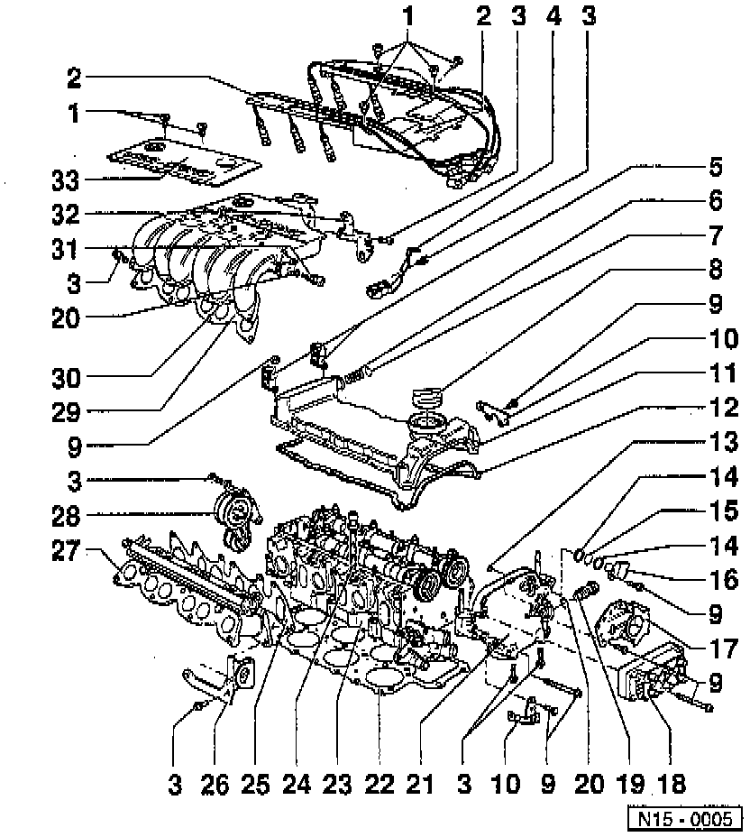
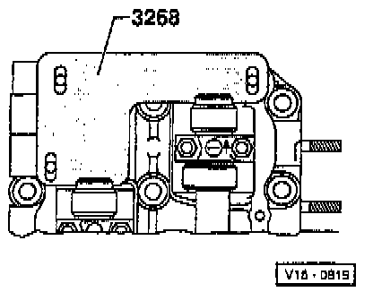
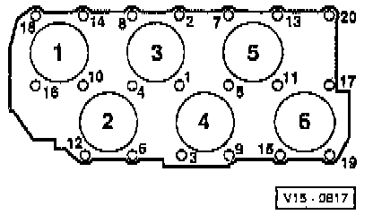

Installation

LEGEND
1 Bolt
2 High Tension Wire Guide
3 Bolt
4 Right Rear Support
5 Bracket
6 Flame Trap Coil
7 Circlip
8 Cap
9 Bolt
10 Bracket
11 Cylinder Head (Valve) Cover
12 Cylinder Head (Valve) Cover Gasket
13 O-ring
14 Spacer Ring
15 O-ring
16 Camshaft Position Sensor
17 Bracket
18 Ignition Coil
19 Chain Tensioner
20 Chain Tensioner Seal
21 Camshaft Sprocket Cover
22 Cylinder Head Gasket
23 Cylinder Head
24 Cylinder Head Bolt
25 Intake Manifold Lower Section Gasket
26 Lifting Eye
27 Intake Manifold Lower Section
28 Ribbed Drive Belt Tensioner
29 Intake Manifold Upper Section Gasket
30 Intake Manifold Upper Section
31 Intake Air Temperature Sensor
32 Left Rear Support
33 Cover
NOTE:
- During removal and installation procedures, refer to the component location illustration above and component notes below.
- When installing an exchange cylinder head with camshaft installed, the contact surfaces between the hydraulic lifter and cam must be oiled after installation.
- The plastic protectors fitted to protect the open valves must only be removed immediately before installing the cylinder head.
- If the cylinder head is replaced, the entire engine coolant must be replaced with new coolant.
COMPONENT NOTES
Bolt (1)
- Tighten to: 5 Nm (44 inch lbs.).
Bolt (3)
- Tighten to: 25 Nm (18 ft. lbs.).
Right Rear Support (4)
- Between intake manifold upper section and cylinder head.
- With Bracket for fuel lines.
Bracket (5)
- For fuel lines.
Cap (8)
- Replace seal if damaged.
Bolt (9)
- Tighten to: 10 Nm (7 ft. lbs.).
Bracket (10)
- For electric wires.
Cylinder Head (Valve) Cover (11)
- Refer to Valve Cover for procedures.
Cylinder Head (Valve) Cover Gasket (12)
- Always replace.
- Note installed position.
O-ring (13)
- Always replace.
- Lubricate before installing, then install into the camshaft sprocket cover (item 21).
O-ring (15)
- Always replace.
- Lubricate before installing.
Bracket (17)
- For 42 pin connector and auxiliary coolant circulation pump.
Chain Tensioner (19)
- Tighten to: 30 Nm (22 ft. lbs.).
- For double chain.
- Bleed before installing, refer to Timing Components.
- Only turn engine with tensioner installed.
Chain Tensioner Seal (20)
- Always replace.
Camshaft Sprocket Cover (21)
- Coat sealing surfaces with sealer part No. AMV 188 001 02, or equivalent.
- If only the camshaft sprocket cover has been removed, prepare cylinder head gasket for assembly.
Cylinder Head Gasket (22)
- Always replace when removed.
- Always replace coolant when gasket replaced.
Cylinder Head (23)
- Check for distortion, refer to Testing and Inspection.
- Refer to the tightening procedure shown below.
- When replacing the cylinder head, always replace coolant.
Cylinder Head Bolts (24)
- Always replace when removed.
- Refer to loosening and tightening procedure shown below.
Intake Manifold Lower Section Gasket (25)
- Always replace.
Ribbed Drive Belt Tensioner (28)
- To remove ribbed drive belt, refer to Drive Belts, Mounts, Brackets and Accessories.
Intake Manifold Upper Section Gasket (29)
- Always replace.
Intake Manifold Upper Section Gasket (30)
- Tighten in the following sequence:
a. Tighten intake manifold lower section.
b. Tighten both rear supports (items 4 and 32).
c. Tighten intake manifold upper section.
Intake Air Temperature Sensor (31)
- Tighten to: 10 Nm (7 ft. lbs.).
Left Rear Support (32)
- Between intake manifold upper section and cylinder head.
- With engine ground connection.
Cover (33)
- Above intake manifold upper section.
PROCEDURE
1. Position No. 1 Cyl. piston at Top Dead Center (TDC).

2. Locate camshafts using camshaft jig tool No. 3268, or equivalent.
3. Install cylinder head gasket.
- Observe position of locating dowels in cylinder block (hole 12 and 20).
4. Place cylinder head on engine block.
5. Insert cylinder head bolts and hand-tighten.

6. Tighten cylinder head in four stages in the sequence shown as follows:
- Tighten initially with torque wrench:
Stage I, tighten to: 40 Nm (30 ft. lbs.).
Stage II, tighten to: 60 Nm (44 ft. lbs.).
- Turn further with normal wrench:
Stage III, turn: 1/4 turn (90°).
Stage IV, turn an additional: 1/4 turn (90°).
NOTE:
- Loosening cylinder head: Reverse sequence.
- Re-torquing cylinder head after repairs is not necessary.